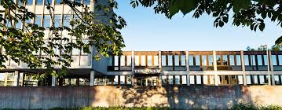
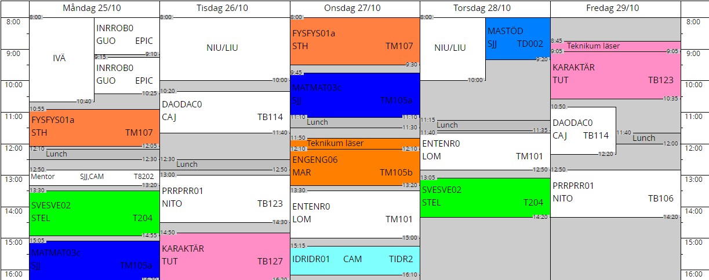

About me
Well hello there!
My name is Kevin Johansson, a 17 year old male studying engineering at a Swedish school know as Teknikum. As you might have been able to gather I quite like math, programming and anything computer related. This site has been made by me! Feel free to explore it's content and learn all about me!
A litle something about my school
This is the school I atend, it's called Teknikum great school!
A bit about the school!
As mentioned earlier the school is called teknikum, it's located in a small city in Sweden called Växjö. The boulding itself is revolves arround a centiral hallway that connects to four corridors, almost like an E shape. There is an entire level underneath the school built to resembel the ground floor. Speeking of witch, There are two connected towers that can be accessed from the ground floor. Teknikum started out as an engineering school but has since branched out. Although Teknikum is still primarely an engineering school, with majorety of it's students studying engineering. An astounding 300 out of about 800 students studying engineering! This school obviously has other programs.
Oi! guess what!
A link to the schools website!- The children and leisure program
- The children and leisure program is a vocational program for you who envision a future where you work with people's learning and development at different ages.
- The electricity and energy program
- Are you interested in technology and eager to work directly after high school? The electricity and energy program is a broad vocational education for you who want to work in the computer or electricity industry.
- The science program
- science program with a programming profile, you acquire excellent knowledge and tools for the digitalized labor market of the future.
- The egineering program
- The engineering program is a university preparatory program primarily in technology and science. The program provides abroad eligibility for further studies.
- The plumbing and real estate program
- In the HVAC and real estate program, you get a basic education for work with installation, operation and maintenance in the HVAC or real estate industry.
- The treatment and care program
- The care and nursing program is for you who envision a future where you can work with people.
My schedual and the things I study!
- Robotics engineering
- In this subject i spend my time learning all about robots. From how they work, to how to code them and every thing inbetween! Currently I'm learning a new code language (STL aka structural text. L probably stands for layout) for robots.
- Swedish
- In this subject we learn about mostly text, literature and so on. Currently we're working on a debate about wheter or not swedish should be an obligetory language to learn in Finland.
- English
- Right now we're making presentation about an authur from the english speaking world. The plan is to make an essay about a book once we're Done with the presentations.Other than that it's been a lot of basic grammer.
- Entrepreneurship
- We're using this to run a company for one year, after that the company will close down. We're called EZmix, we make cake mixes where all you need to do is add water and oil. After that put it in the oven for 40 min and you'll get a cake. Go check us out would you?
- Fysik
- We work with task to learn about things related to Fysiks, every once in a while we'll have a labb. The labbs are quite fun and interessting.
- Maths
- Maths! We're working with math here, I know I give the best descriptions. Now we're working with what I think translates into calculus? whateverit is, it's some hard and advanced stuff
- PE
- PE, Theres not mutch to say here. It's simply PE.
- Homeroom
- During Homeroom we usually siit and discuss whatever is relevent or of importance.
- Programming
- Programming! One of the most fun leassons, we spend our time codeing in C#, HTML, CSS and Javascript. This leasson is quite freaing, we usually get a task to code or are told to practice our codeing anny way we want (with obvious exeptions).
- Webdevelopment
- Another one of the most fun subjects! so far has gone hand in hand with the programming leassons. We usually work on projects asigned to us from the teacher. As a matter of fact this site is one of those projects!
- Computer tech
- has a lot of promise and is quite interresting. But all we've done for the past weeks in that subject is read, a lot of reading.